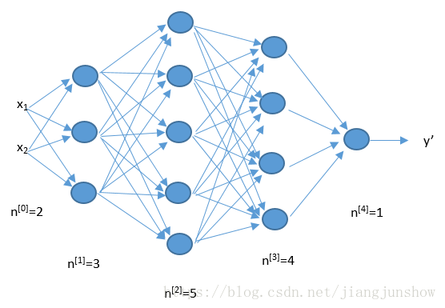
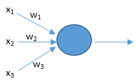

<!DOCTYPE html>
<html>
<head><meta name="generator" content="Hexo 3.8.0">
  <meta charset="utf-8">

  <!-- PACE Progress Bar START -->
  
    <script src="https://raw.githubusercontent.com/HubSpot/pace/v1.0.2/pace.min.js"></script>
    <link rel="stylesheet" href="https://github.com/HubSpot/pace/raw/master/themes/orange/pace-theme-flash.css">
  
  

  <!-- PACE Progress Bar START -->

  
  <title>人工智能初识（一）：什么是神经网络 | Blog of Geowind</title>
  <meta name="viewport" content="width=device-width, initial-scale=1, maximum-scale=1">
  
  <meta name="keywords" content="人工智能神经网络">
  
  
  
  
  <meta name="description" content="了解人工智能？了解神经网络？">
<meta name="keywords" content="人工智能,神经网络">
<meta property="og:type" content="article">
<meta property="og:title" content="人工智能初识（一）：什么是神经网络">
<meta property="og:url" content="http://geowind.org/GeowindBlog/archives/1ece966.html">
<meta property="og:site_name" content="Blog of Geowind">
<meta property="og:description" content="了解人工智能？了解神经网络？">
<meta property="og:locale" content="default">
<meta property="og:image" content="http://geowind.org/GeowindBlog/assets/1_1.png">
<meta property="og:image" content="http://geowind.org/GeowindBlog/assets/1_2.png">
<meta property="og:image" content="http://geowind.org/GeowindBlog/assets/1_3.png">
<meta property="og:image" content="http://geowind.org/GeowindBlog/assets/1_4.png">
<meta property="og:updated_time" content="2018-10-23T02:49:18.000Z">
<meta name="twitter:card" content="summary">
<meta name="twitter:title" content="人工智能初识（一）：什么是神经网络">
<meta name="twitter:description" content="了解人工智能？了解神经网络？">
<meta name="twitter:image" content="http://geowind.org/GeowindBlog/assets/1_1.png">
  
    <link rel="alternate" href="/atom.xml" title="Blog of Geowind" type="application/atom+xml">
  
  <link rel="icon" href="/GeowindBlog/css/images/favicon.ico">
  
    <link href="//fonts.googleapis.com/css?family=Source+Code+Pro" rel="stylesheet" type="text/css">
  
  <link href="https://fonts.googleapis.com/css?family=Open+Sans|Montserrat:700" rel="stylesheet" type="text/css">
  <link href="https://fonts.googleapis.com/css?family=Roboto:400,300,300italic,400italic" rel="stylesheet" type="text/css">
  <link href="https://cdn.bootcss.com/font-awesome/4.6.3/css/font-awesome.min.css" rel="stylesheet">
  <style type="text/css">
    @font-face{font-family:futura-pt;src:url(https://use.typekit.net/af/9749f0/00000000000000000001008f/27/l?subset_id=2&fvd=n5) format("woff2");font-weight:500;font-style:normal;}
    @font-face{font-family:futura-pt;src:url(https://use.typekit.net/af/90cf9f/000000000000000000010091/27/l?subset_id=2&fvd=n7) format("woff2");font-weight:500;font-style:normal;}
    @font-face{font-family:futura-pt;src:url(https://use.typekit.net/af/8a5494/000000000000000000013365/27/l?subset_id=2&fvd=n4) format("woff2");font-weight:lighter;font-style:normal;}
    @font-face{font-family:futura-pt;src:url(https://use.typekit.net/af/d337d8/000000000000000000010095/27/l?subset_id=2&fvd=i4) format("woff2");font-weight:400;font-style:italic;}</style>
    
  <link rel="stylesheet" id="athemes-headings-fonts-css" href="//fonts.googleapis.com/css?family=Yanone+Kaffeesatz%3A200%2C300%2C400%2C700&amp;ver=4.6.1" type="text/css" media="all">
  <link rel="stylesheet" href="/GeowindBlog/css/style.css">

  <script src="https://code.jquery.com/jquery-3.1.1.min.js"></script>

  <!-- Bootstrap core CSS -->
  <link rel="stylesheet" href="https://netdna.bootstrapcdn.com/bootstrap/3.0.2/css/bootstrap.min.css">
  <link rel="stylesheet" href="/GeowindBlog/css/hiero.css">
  <link rel="stylesheet" href="/GeowindBlog/css/glyphs.css">
  

  <!-- Custom CSS -->
  <link rel="stylesheet" href="/GeowindBlog/css/my.css">
  <!-- Google Adsense -->
  
  <script async src="//pagead2.googlesyndication.com/pagead/js/adsbygoogle.js"></script>
  <script>
      (adsbygoogle = window.adsbygoogle || []).push({
          google_ad_client: "ca-pub-0123456789ABCDEF",
          enable_page_level_ads: true
      });
  </script>
  
</head>
</html>
<script>
var themeMenus = {};

  themeMenus["/GeowindBlog/"] = "Home"; 

  themeMenus["/GeowindBlog/archives/"] = "Archives"; 

  themeMenus["/GeowindBlog/categories/"] = "Categories"; 

  themeMenus["/GeowindBlog/tags/"] = "Tags"; 

</script>


  <body data-spy="scroll" data-target="#toc" data-offset="50">


  <header id="allheader" class="site-header" role="banner">
  <div class="clearfix container">
      <div class="site-branding">

          <h1 class="site-title">
            
              <a href="/GeowindBlog/" rel="home">
                
              </a>
            
          </h1>

          
            <div class="site-description">Everyone make a difference , Geowind Here</div>
          
            
          <nav id="main-navigation" class="main-navigation" role="navigation">
            <a class="nav-open">Menu</a>
            <a class="nav-close">Close</a>
            <div class="clearfix sf-menu">

              <ul id="main-nav" class="nmenu sf-js-enabled">
                    
                      <li class="menu-item menu-item-type-custom menu-item-object-custom menu-item-home menu-item-1663"> <a class="" href="/GeowindBlog/">Home</a> </li>
                    
                      <li class="menu-item menu-item-type-custom menu-item-object-custom menu-item-home menu-item-1663"> <a class="" href="/GeowindBlog/archives/">Archives</a> </li>
                    
                      <li class="menu-item menu-item-type-custom menu-item-object-custom menu-item-home menu-item-1663"> <a class="" href="/GeowindBlog/categories/">Categories</a> </li>
                    
                      <li class="menu-item menu-item-type-custom menu-item-object-custom menu-item-home menu-item-1663"> <a class="" href="/GeowindBlog/tags/">Tags</a> </li>
                    
              </ul>
            </div>
          </nav>


      </div>
  </div>
</header>


  <div id="originBgDiv" style="background: #fff; width: 100%;">

      <div style="max-height:600px; overflow: hidden;  display: flex; display: -webkit-flex; align-items: center;">
        
      </div>

  </div>

  <script>
  function setAboutIMG(){
      var imgUrls = "css/images/pose.jpg,https://source.unsplash.com/collection/954550/1920x1080".split(",");
      var random = Math.floor((Math.random() * imgUrls.length ));
      if (imgUrls[random].startsWith('http') || imgUrls[random].indexOf('://') >= 0) {
        document.getElementById("originBg").src=imgUrls[random];
      } else {
        document.getElementById("originBg").src='/GeowindBlog/' + imgUrls[random];
      }
  }
  bgDiv=document.getElementById("originBgDiv");
  if(location.pathname.match('about')){
    setAboutIMG();
    bgDiv.style.display='block';
  }else{
    bgDiv.style.display='none';
  }
  </script>


  <div id="container">
    <div id="wrap">
            
      <div id="content" class="outer">
        
          <section id="main" style="float:none;"><article id="post-人工智能初识（一）：什么是神经网络" style="width: 66%; float:left;" class="article article-type-post" itemscope="" itemprop="blogPost">
  <div id="articleInner" class="clearfix post-1016 post type-post status-publish format-standard has-post-thumbnail hentry category-template-2 category-uncategorized tag-codex tag-edge-case tag-featured-image tag-image tag-template">
    
    
      <header class="article-header">
        
  
    <h1 class="thumb" itemprop="name">
      人工智能初识（一）：什么是神经网络
    </h1>
  

      </header>
    
    <div class="article-meta">
      
	Posted on <a href="/GeowindBlog/archives/1ece966.html" class="article-date">
	  <time datetime="2018-10-23T02:49:18.000Z" itemprop="datePublished">October 23, 2018</time>
	</a>

      
	<span id="busuanzi_container_page_pv">
	  本文总阅读量<span id="busuanzi_value_page_pv"></span>次
	</span>

    </div>
    <div class="article-entry" itemprop="articleBody">
      
        <p>了解人工智能？了解神经网络？<br><a id="more"></a></p>
<blockquote>
<p>转载原文链接：<a href="https://blog.csdn.net/jiangjunshow/article/details/77368314" target="_blank" rel="noopener">https://blog.csdn.net/jiangjunshow/article/details/77368314</a></p>
</blockquote>
<p>什么是人工智能？通俗来讲，就是让机器能像人一样思考。这个无需解释太多，因为通过各种科幻电影我们已经对人工智能很熟悉了。大家现在感兴趣的应该是——如何实现人工智能？</p>
<p>从1956年夏季首次提出“人工智能”这一术语开始，科学家们尝试了各种方法来实现它。这些方法包括专家系统，决策树、归纳逻辑、聚类等等，但这些都是假智能。直到人工神经网络技术的出现，才让机器拥有了“真智能”。</p>
<p>为什么说之前的方法都是假智能呢？因为我们人类能清清楚楚地知道它们内部的分析过程，它们只是一个大型的复杂的程序而已；而人工神经网络则不同，它的内部是一个黑盒子，就像我们人类的大脑一样，我们不知道它内部的分析过程，我们不知道它是如何识别出人脸的，也不知道它是如何打败围棋世界冠军的。我们只是为它构造了一个躯壳而已，就像人类一样，我们只是生出了一个小孩而已，他脑子里是如何想的我们并不知道！这就是人工智能的可怕之处，因为将来它有可能会觉得我们人类不应该活在这个世界上，而把我们消灭掉；为此，世界上已经成立了不少安全协会来防范人工智能。</p>
<p>人工神经网络是受到人类大脑结构的启发而创造出来的，这也是它能拥有真智能的根本原因。在我们的大脑中，有数十亿个称为神经元的细胞，它们连接成了一个神经网络。<br><br>人工神经网络正是模仿了上面的网络结构。下面是一个人工神经网络的构造图。每一个圆代表着一个神经元，他们连接起来构成了一个网络。<br><br>人类大脑神经元细胞的树突接收来自外部的多个强度不同的刺激，并在神经元细胞体内进行处理，然后将其转化为一个输出结果。如下图所示。<br><br> 人工神经元也有相似的工作原理。如下图所示。<br><br>上面的x是神经元的输入，相当于树突接收的多个外部刺激。w是每个输入对应的权重，它影响着每个输入x的刺激强度。</p>
<p>大脑的结构越简单，那么智商就越低。单细胞生物是智商最低的了。人工神经网络也是一样的，网络越复杂它就越强大，所以我们需要深度神经网络。这里的深度是指层数多，层数越多那么构造的神经网络就越复杂。</p>
<p>训练深度神经网络的过程就叫做深度学习。网络构建好了后，我们只需要负责不停地将训练数据输入到神经网络中，它内部就会自己不停地发生变化不停地学习。打比方说我们想要训练一个深度神经网络来识别猫。我们只需要不停地将猫的图片输入到神经网络中去。训练成功后，我们任意拿来一张新的图片，它都能判断出里面是否有猫。但我们并不知道他的分析过程是怎样的，它是如何判断里面是否有猫的。就像当我们教小孩子认识猫时，我们拿来一些白猫，告诉他这是猫，拿来一些黑猫，告诉他这也是猫，他脑子里会自己不停地学习猫的特征。最后我们拿来一些花猫，问他，他会告诉你这也是猫。但他是怎么知道的？他脑子里的分析过程是怎么样的？我们无从知道~~</p>

      
    </div>
    <footer class="entry-meta entry-footer">
      
	<span class="ico-folder"></span>
    <a class="article-category-link" href="/GeowindBlog/categories/人工智能初识/">人工智能初识</a>, <a class="article-category-link" href="/GeowindBlog/categories/人工智能初识/（一）/">（一）</a>

      
  <span class="ico-tags"></span>
  <ul class="article-tag-list"><li class="article-tag-list-item"><a class="article-tag-list-link" href="/GeowindBlog/tags/人工智能/">人工智能</a></li><li class="article-tag-list-item"><a class="article-tag-list-link" href="/GeowindBlog/tags/神经网络/">神经网络</a></li></ul>

      
            
      
        
	<div id="comment">
		<!-- 来必力City版安装代码 -->
		<div id="lv-container" data-id="city" data-uid="MTAyMC8yOTQ4MS82MDQ5">
		<script type="text/javascript">
		   (function(d, s) {
		       var j, e = d.getElementsByTagName(s)[0];

		       if (typeof LivereTower === 'function') { return; }

		       j = d.createElement(s);
		       j.src = 'https://cdn-city.livere.com/js/embed.dist.js';
		       j.async = true;

		       e.parentNode.insertBefore(j, e);
		   })(document, 'script');
		</script>
		<noscript>为正常使用来必力评论功能请激活JavaScript</noscript>
		</div>
		<!-- City版安装代码已完成 -->
	</div>


      
    </footer>
  </div>
  
    
<nav id="article-nav">
  
  
    <a href="/GeowindBlog/archives/bc09e2e8.html" id="article-nav-older" class="article-nav-link-wrap">
      <strong class="article-nav-caption">Older</strong>
      <div class="article-nav-title">hyperledger术语表</div>
    </a>
  
</nav>

  
</article>

<!-- Table of Contents -->

  <aside id="sidebar">
    <div id="toc" class="toc-article">
    <strong class="toc-title">Contents</strong>
    
      <ol class="nav">None</ol>
    
    </div>
  </aside>
</section>
        
      </div>
      <footer id="footer" class="site-footer">
  

  <div class="clearfix container">
      <div class="site-info">
	      &copy; 2018 Blog of Geowind All Rights Reserved.
          
            <span id="busuanzi_container_site_uv">
              本站访客数<span id="busuanzi_value_site_uv"></span>人次  
              本站总访问量<span id="busuanzi_value_site_pv"></span>次
            </span>
          
      </div>
      <div class="site-credit">
        Theme by <a href="https://github.com/iTimeTraveler/hexo-theme-hiero" target="_blank">hiero</a>
      </div>
  </div>
</footer>


<!-- min height -->

<script>
    var contentdiv = document.getElementById("content");

    contentdiv.style.minHeight = document.body.offsetHeight - document.getElementById("allheader").offsetHeight - document.getElementById("footer").offsetHeight + "px";
</script>

<!-- Custome JS -->
<script src="/GeowindBlog/js/my.js"></script>
    </div>
    <!-- <nav id="mobile-nav">
  
    <a href="/GeowindBlog/" class="mobile-nav-link">Home</a>
  
    <a href="/GeowindBlog/archives/" class="mobile-nav-link">Archives</a>
  
    <a href="/GeowindBlog/categories/" class="mobile-nav-link">Categories</a>
  
    <a href="/GeowindBlog/tags/" class="mobile-nav-link">Tags</a>
  
</nav> -->
    

<!-- mathjax config similar to math.stackexchange -->

<script type="text/x-mathjax-config">
  MathJax.Hub.Config({
    tex2jax: {
      inlineMath: [ ['$','$'], ["\\(","\\)"] ],
      processEscapes: true
    }
  });
</script>

<script type="text/x-mathjax-config">
    MathJax.Hub.Config({
      tex2jax: {
        skipTags: ['script', 'noscript', 'style', 'textarea', 'pre', 'code']
      }
    });
</script>

<script type="text/x-mathjax-config">
    MathJax.Hub.Queue(function() {
        var all = MathJax.Hub.getAllJax(), i;
        for(i=0; i < all.length; i += 1) {
            all[i].SourceElement().parentNode.className += ' has-jax';
        }
    });
</script>

<script type="text/javascript" src="https://cdnjs.cloudflare.com/ajax/libs/mathjax/2.7.4/MathJax.js?config=TeX-AMS-MML_HTMLorMML">
</script>


  <link rel="stylesheet" href="https://cdnjs.cloudflare.com/ajax/libs/fancybox/2.1.5/jquery.fancybox.min.css">
  <script src="https://cdnjs.cloudflare.com/ajax/libs/fancybox/2.1.5/jquery.fancybox.min.js"></script>


<script src="/GeowindBlog/js/scripts.js"></script>
<script src="https://stackpath.bootstrapcdn.com/bootstrap/3.3.7/js/bootstrap.min.js"></script>
<script src="/GeowindBlog/js/main.js"></script>


  <div style="display: none;">
    <script src="https://s95.cnzz.com/z_stat.php?id=1260716016&web_id=1260716016" language="JavaScript"></script>
  </div>


	<script async src="https://dnqof95d40fo6.cloudfront.net/atw7f8.js">
	</script>


  </div>

  <a id="rocket" href="#top" class=""></a>
  <script type="text/javascript" src="/js/totop.js" async=""></script>
</body>
</html>
